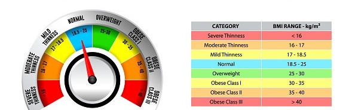

Body Mass Index (BMI)
Body Mass Index (BMI) adalah kalkulator sederhana untuk menghitung berat badan ideal berdasarkan tinggi dan berat badan.
1. Intip Cara Hitung Berat Badan Ideal dengan Body Mass Index (BMI)
DAFTAR ISI
- Cara Menghitung Berat Badan Ideal dengan Body Mass Index (BMI)
- Batasan BMI yang Perlu Diketahui
- Faktor-Faktor yang Memengaruhi BMI
- Siapa Saja yang Tidak Bisa Menggunakan Body Mass Index (BMI)?
- Cara Menjaga Berat Badan Ideal
Kesehatan seseorang bisa dilihat dari berbagai aspek, salah satunya berat badan. Orang dengan berat badan berlebih (obesitas) besar kemungkinannya mengalami gangguan kesehatan dibanding mereka dengan berat badan ideal.
Nah, menghitung berat badan ideal, terdapat kalkulator khusus yang sering digunakan yang disebut Body Mass Index (BMI).
BMI adalah kalkulator sederhana untuk menghitung berat badan ideal berdasarkan tinggi dan berat badan.
Dengan menggunakan kalkulator BMI, akan diketahui apakah seseorang masuk dalam kategori berat badan ideal atau tidak.
2. Cara Menghitung Berat Badan Ideal dengan Body Mass Index (BMI)
Ini adalah cara menghitung berat badan ideal yang cukup banyak digunakan.
Namun, BMI umumnya hanya dapat digunakan untuk orang dengan umur 20 tahun atau lebih. Untuk di bawah 20 tahun, dianjurkan untuk menggunakan cara lain.
Dengan membagi berat badan dalam kilogram dengan tinggi badan dalam meter persegi, perhitungan BMI akan membandingkan berat badan dengan tinggi badan.
Terdapat dua hal yang perlu diperhatikan saat menghitung dengan BMI yaitu rumus dan kategori berat badan.
Di bawah ini adalah kategori berat badan berdasarkan hasil angka BMI.
- Di bawah 18.5 = Berat badan rendah
- Di antara 18.5 – 22.9 = Berat badan ideal
- Di antara 23 – 24.9 = Berat badan berlebih
- Di atas 25 = Obesitas
Untuk contoh perhitungannya, misalkan, saat ini kamu memiliki berat badan 75 kilogram dan tinggi 1,6 meter (160 sentimeter).
Kamu ingin mencari tahu apakah kamu memiliki berat badan yang ideal atau obesitas.
Pertama-tama, kalikan tinggi badan dalam kuadrat untuk mengubah meter ke meter persegi: 1,6 meter x 1,6 meter = 2,56 meter². Lalu, bagi angka berat badan dengan hasil kuadrat tinggi badan: 75/2,56 = 29,2.
Ketahui Obesitas Bukan Sekadar Pola Makan, Kenali Penyebabnya di artikel ini.
Setelah itu, cocokkan angka BMI (29,2) dengan kategori berat badan yang tercantum.
Jika mengikuti contoh kasus berat badan di atas, maka angka BMI alias body mass index kamu menunjukkan hasil kamu memiliki berat badan berlebih (berpotensi obesitas).
Meskipun begitu, BMI dapat menimbulkan kesalahpahaman bagi beberapa golongan orang.
Supaya lebih praktis, kamu bisa mencari tahu berat badan idealmu dengan menggunakan kalkulator BMI yang ada di Halodoc. Klik gambar berikut untuk mengeceknya sekarang:
3. Batasan BMI yang Perlu Diketahui
Meskipun praktis, BMI memiliki beberapa batasan yang perlu dipahami:
- Tidak membedakan massa otot dan lemak: BMI tidak dapat membedakan antara massa otot dan massa lemak. Seseorang dengan massa otot tinggi (seperti atlet) mungkin memiliki BMI yang tinggi, tetapi bukan berarti mereka mengalami obesitas.
- Tidak cocok untuk ibu hamil: BMI tidak akurat untuk ibu hamil karena perubahan berat badan yang signifikan selama kehamilan.
4. Faktor-Faktor yang Memengaruhi BMI
Selain berat dan tinggi badan, beberapa faktor lain juga dapat memengaruhi BMI seseorang:
- Usia: BMI cenderung meningkat seiring bertambahnya usia.
- Jenis kelamin: Pria cenderung memiliki massa otot yang lebih tinggi daripada wanita, sehingga memengaruhi BMI.
- Aktivitas fisik: Orang yang aktif secara fisik cenderung memiliki massa otot yang lebih tinggi dan BMI yang lebih rendah.
- Genetik: Faktor genetik juga dapat berperan dalam menentukan kecenderungan seseorang untuk memiliki berat badan tertentu.
Obat-obatan bisa membantu dukung diet kamu, Ini 5 Rekomendasi Obat Diet yang Ampuh dan Aman untuk Turunkan Berat Badan.
5. Siapa Saja yang Tidak Bisa Menggunakan Body Mass Index (BMI)?
BMI tidak dapat digunakan untuk:
- Binaragawan.
- Atlet.
- Wanita hamil.
- Lansia dan anak kecil.
Ini karena BMI tidak memperhitungkan apakah berat badan yang dihasilkan berasal dari otot atau lemak.
Mereka yang memiliki massa otot yang lebih banyak, seperti atlet, mungkin memiliki angka BMI yang tinggi tetapi tidak berisiko memiliki gangguan kesehatan.
Mereka dengan massa otot yang lebih rendah, seperti anak-anak yang masih dalam masa pertumbuhan atau lansia yang mungkin kehilangan beberapa massa otot akan memiliki BMI yang lebih rendah.
Untuk ibu hamil penggunaan BMI juga tidak tepat karena selama kehamilan dan menyusui, komposisi tubuh wanita berubah.
6. Cara Menjaga Berat Badan Ideal
Menjaga berat badan ideal penting untuk kesehatan secara keseluruhan. Berikut adalah beberapa tips yang dapat membantu:
- Pola makan sehat: Konsumsi makanan bergizi seimbang, kaya serat, buah-buahan, sayuran, dan protein tanpa lemak. Batasi konsumsi makanan olahan, gula, dan lemak jenuh.
- Aktivitas fisik teratur: Lakukan aktivitas fisik minimal 150 menit per minggu dengan intensitas sedang, atau 75 menit per minggu dengan intensitas tinggi.
- Istirahat yang cukup: Tidur yang cukup (7-8 jam per malam) penting untuk menjaga metabolisme tubuh dan mengontrol nafsu makan.
- Kelola stres: Stres dapat memicu makan berlebihan. Temukan cara sehat untuk mengelola stres, seperti meditasi, yoga, atau menghabiskan waktu bersama orang-orang terdekat.